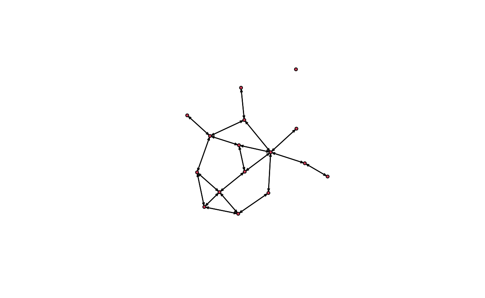
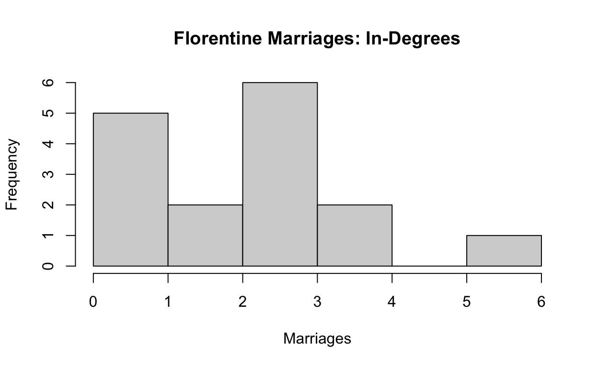
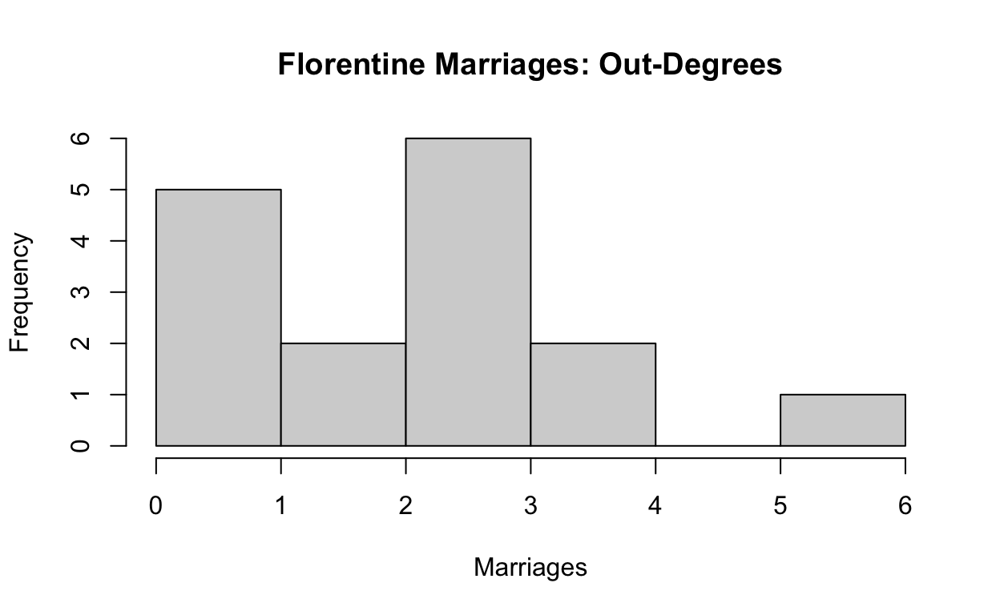

A short description of the post.
set.seed(1)
canvas_flow(colors = colorPalette("vrolik3"), lines = 3000, lwd = 0.5,
iterations = 1000, stepmax = 0.1, angles = 'svm')
# see ?canvas_flow for more input parameters of this function
Network attributes:
vertices = 16
directed = TRUE
hyper = FALSE
loops = FALSE
multiple = FALSE
bipartite = FALSE
total edges= 40
missing edges= 0
non-missing edges= 40
Vertex attribute names:
vertex.names
No edge attributesplot(statted_florentine)

As can be seen from the graph and summary statistics above the florentine family dataset is made up of 40 edges and 16 vertices. Each vertex or node is a family in florence. Each edge, or tie represents a marriage between the two.
As a result the ties are not weighted, so they are binary. However, though the dataset labels the ties are directed, they are actually all mutual so in essence, the dataset does not measure marriaage into a family but simply uses a mutual directed tie for every set of families with a marriage between them.
sna::dyad.census(statted_florentine)
Mut Asym Null
[1,] 20 0 100As can be seen from the code above the dyads within the dataset are either mutual or null, meaning that between any two nodes there are no asymmetric dyads despite the fact that the network is labeled as being directed.
sna::triad.census(statted_florentine)
003 012 102 021D 021U 021C 111D 111U 030T 030C 201 120D 120U
[1,] 324 0 195 0 0 0 0 0 0 0 38 0 0
120C 210 300
[1,] 0 0 3As can be seen from the triad census above the types of triads in the dataset are 324 of the 003-type, 102 of the 102-type, 38 of the 201-type and 3 of the 300-type. The 324 of 003-type and 195 of the 102-type indicate that 519 of the 560 triads are vacuously transitive, the remaining 38 of the 201-type are intransitive and only the 3 300-types are transitive
As can be seen in the code below indicates the the transitivity of the network as a whole is 0.1914894, which follows from the results above. This would indicate a relatively low rate of transitivity and thus low inter-connectedness of the nodes and potientally lower density overall.
gtrans(statted_florentine)
[1] 0.1914894Though the code below indicates that there are 12 isolates in the network, the data from our plot suggests that this is likely untrue and due to the discrepancy between the un-directed true nature of the network and its label as directed as a network object.
isolates(statted_florentine)
[1] 12As indicated by the code chunk below network density here is 0.1666667 indicating that only 16.67% of possible ties in the network are made.
network.density(statted_florentine)
[1] 0.1666667Each of the 16 nodes degrees are acquired from the code bellow in integer form, from the digits alone it is difficult to distinguish any sort of overall pattern in the data.
sna::degree(statted_florentine)
[1] 2 6 4 6 6 2 8 2 12 2 6 0 6 4 8 6Below I create a data frame with the overall degree of each family.
florentine.nodes<-data.frame(name=statted_florentine%v%"vertex.names",
degree=sna::degree(statted_florentine))
florentine.nodes
name degree
1 Acciaiuoli 2
2 Albizzi 6
3 Barbadori 4
4 Bischeri 6
5 Castellani 6
6 Ginori 2
7 Guadagni 8
8 Lamberteschi 2
9 Medici 12
10 Pazzi 2
11 Peruzzi 6
12 Pucci 0
13 Ridolfi 6
14 Salviati 4
15 Strozzi 8
16 Tornabuoni 6Below I then calculate each individual nodes indegree and out-degree.
Upon running the above code I realized that despite the network being labeled directed all of its ties were actually mutual and thus the in-degree and out-degree would be identical since marriage is considered mutual. Though this follows from the fact that are generally considered mutual it is interesting to observe that marriages are not considered into another family but are represented as a mutual, but directed ties between nodes in every case.
sna::degree(statted_florentine, cmode="indegree")
[1] 1 3 2 3 3 1 4 1 6 1 3 0 3 2 4 3sna::degree(statted_florentine, cmode="outdegree")
[1] 1 3 2 3 3 1 4 1 6 1 3 0 3 2 4 3As can be seen from the code above each node has identical in-degrees and out-degrees
florentine.nodes <- data.frame(name=statted_florentine%v%"vertex.names",
totdegree=sna::degree(statted_florentine),
indegree=sna::degree(statted_florentine, cmode="indegree"),
outdegree=sna::degree(statted_florentine, cmode="outdegree"))
florentine.nodes
name totdegree indegree outdegree
1 Acciaiuoli 2 1 1
2 Albizzi 6 3 3
3 Barbadori 4 2 2
4 Bischeri 6 3 3
5 Castellani 6 3 3
6 Ginori 2 1 1
7 Guadagni 8 4 4
8 Lamberteschi 2 1 1
9 Medici 12 6 6
10 Pazzi 2 1 1
11 Peruzzi 6 3 3
12 Pucci 0 0 0
13 Ridolfi 6 3 3
14 Salviati 4 2 2
15 Strozzi 8 4 4
16 Tornabuoni 6 3 3The notion is confirmed by the degree summaries in the code below and the table above. In both cases all indicators are identical for both in-degree and out-degree and sum to the values seen in the total-degree column.
summary(florentine.nodes)
name totdegree indegree outdegree
Length:16 Min. : 0 Min. :0.0 Min. :0.0
Class :character 1st Qu.: 2 1st Qu.:1.0 1st Qu.:1.0
Mode :character Median : 6 Median :3.0 Median :3.0
Mean : 5 Mean :2.5 Mean :2.5
3rd Qu.: 6 3rd Qu.:3.0 3rd Qu.:3.0
Max. :12 Max. :6.0 Max. :6.0 Histograms of the distribution of the degrees also illustrate that the only difference between in-degree, out-degree, and total degree is that total degree has values twice as large for marriages but the same relative frequency.
hist(florentine.nodes$totdegree, main="Florentine Marriages: Total Degrees", xlab="Marriages")
hist(florentine.nodes$indegree, main="Florentine Marriages: In-Degrees", xlab="Marriages")

hist(florentine.nodes$outdegree, main="Florentine Marriages: Out-Degrees", xlab="Marriages")

These results do make degree analysis ineffectual on the dataset, but offer some potential questions. Specifically it would be useful to look at dynamics of marriages into other families as this would have been important at the time. Though marriage is considered symmetric in this dataset it was often used in asymmetric ways during the medieval and renaissance times as a means of diplomacy and establishing goodwill between nobility and as a result the ties between the families are not necessarily symmetric in all cases. It would be interesting to see married into what families in terms of sex and birth status hierarchy i.e.first, second, third born, etc.
flo_sorted_by_total_degree<-florentine.nodes[order(-florentine.nodes$totdegree),]
flo_sorted_by_total_degree
name totdegree indegree outdegree
9 Medici 12 6 6
7 Guadagni 8 4 4
15 Strozzi 8 4 4
2 Albizzi 6 3 3
4 Bischeri 6 3 3
5 Castellani 6 3 3
11 Peruzzi 6 3 3
13 Ridolfi 6 3 3
16 Tornabuoni 6 3 3
3 Barbadori 4 2 2
14 Salviati 4 2 2
1 Acciaiuoli 2 1 1
6 Ginori 2 1 1
8 Lamberteschi 2 1 1
10 Pazzi 2 1 1
12 Pucci 0 0 0The results above indicate that the medici family are the most central node in the network having the most marriages and thus the most in-degrees and out-degrees. The mean of these two degrees is 2.5 in the dataset thus they have more than double the average marriages, however 4 other families have just 2, while the puccis have no ties.
This also poses the question as to whether or not there are more families that could be included and what the criteria was for allowance in the florentine family data. In this case 4-6 marriages is the most common with 6 nodes having 4-6 marriages.
The least central are the Pucci family who are included in the dataset but have no edges or connections to others families by marriage. The Acciaiuoli, Ginori, Lamberteschi, and Pazzi all have 2 total ties, one in and one out representing a single marriage.
centralization(statted_florentine, degree, cmode="indegree")
[1] 0.2488889The measure of centralization above represents how concentrated edges between nodes are concentrated among actors. He centralization is slightly less than 25% which would indicate that concentration is relatively low this follows from the low transitivity of the network as a whole, there very few actual connections as compared to the possible connections. As a result of these findings it appears as if the network is not extremely centralized with most families having 2-3 marriages with the largest only being 6. The network also has a low level of transitivity as most nodes are not connected to one another.
However it is important to note that we do not know aspects certain aspects of the families that are relevant to understanding the extent of the networks true connectivity, this could be heirs with ties to both families marriages and the number of marriages between families that happened out of the possible number afforded to each family by their number of heirs. Having family tree measurements would allow for more meaningful analysis that could make the network truly directed by seeing who married into what family and what they represented to their families in terms of succession including their effects in creating prior generations that continued these connections.
For attribution, please cite this work as
Milstein (2022, Feb. 7). Noah_Milstein_Blog: Florentine Families Week 3 Assignment. Retrieved from https://nmilsteinuma.github.io/posts/2022-02-07-florentine-families-week-3-assignment/
BibTeX citation
@misc{milstein2022florentine,
author = {Milstein, Noah},
title = {Noah_Milstein_Blog: Florentine Families Week 3 Assignment},
url = {https://nmilsteinuma.github.io/posts/2022-02-07-florentine-families-week-3-assignment/},
year = {2022}
}